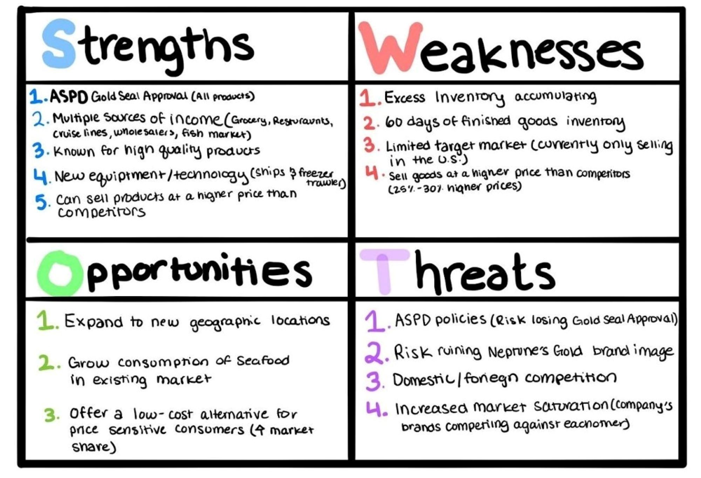
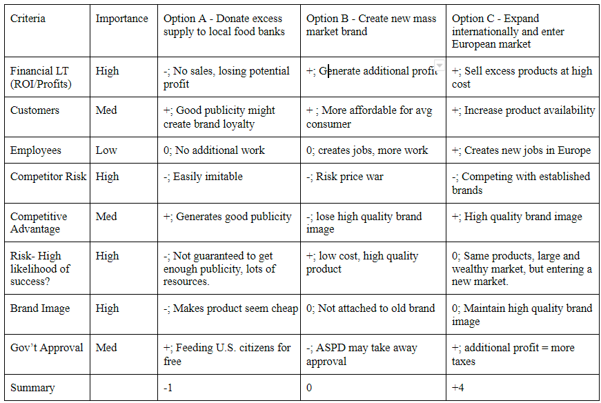
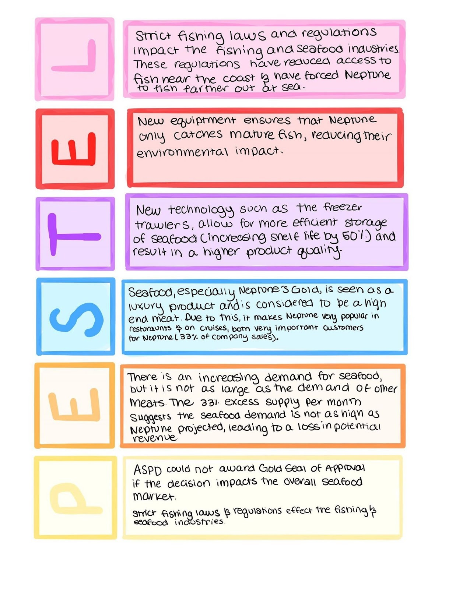
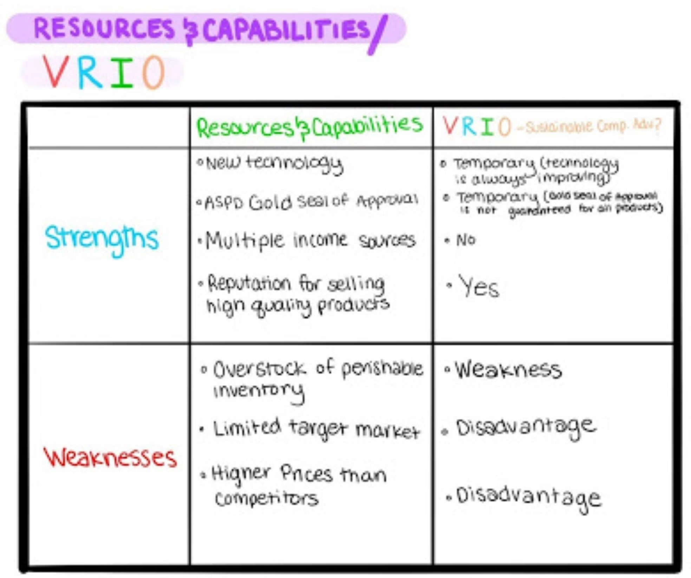
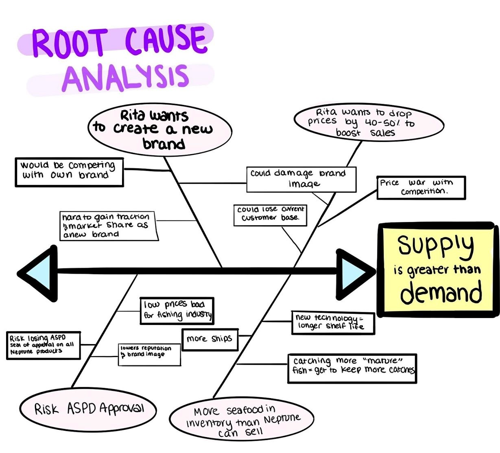
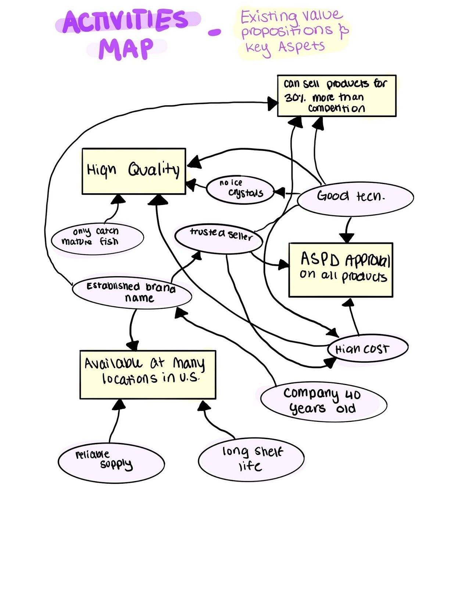
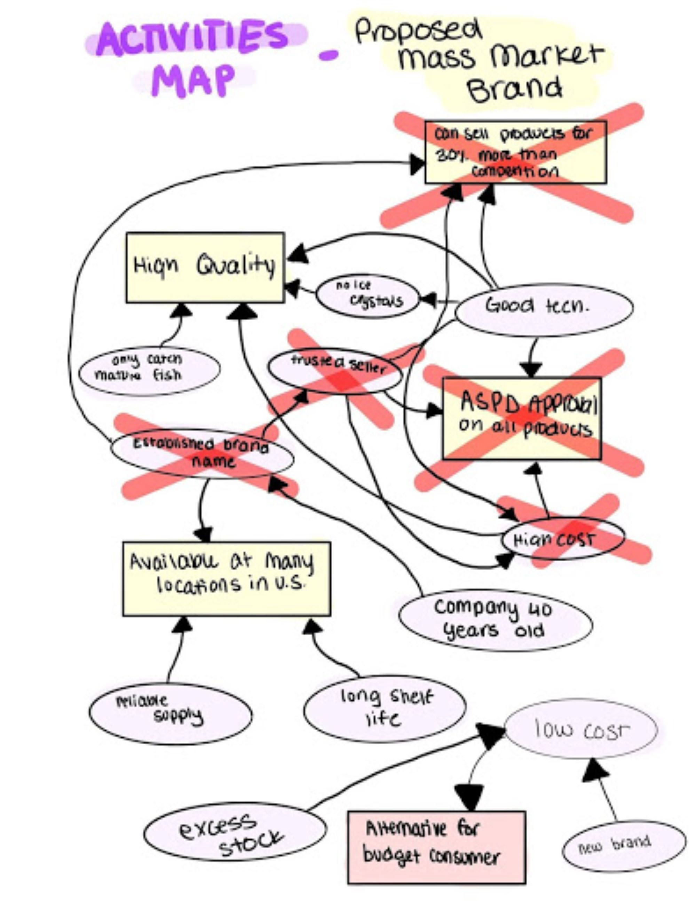
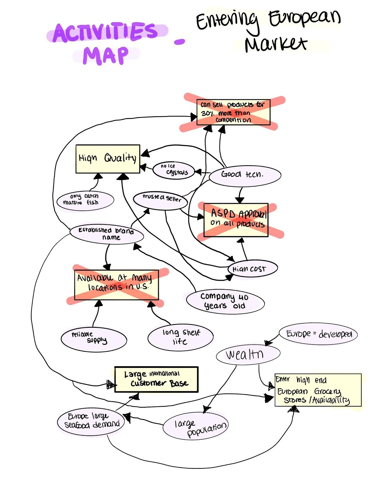
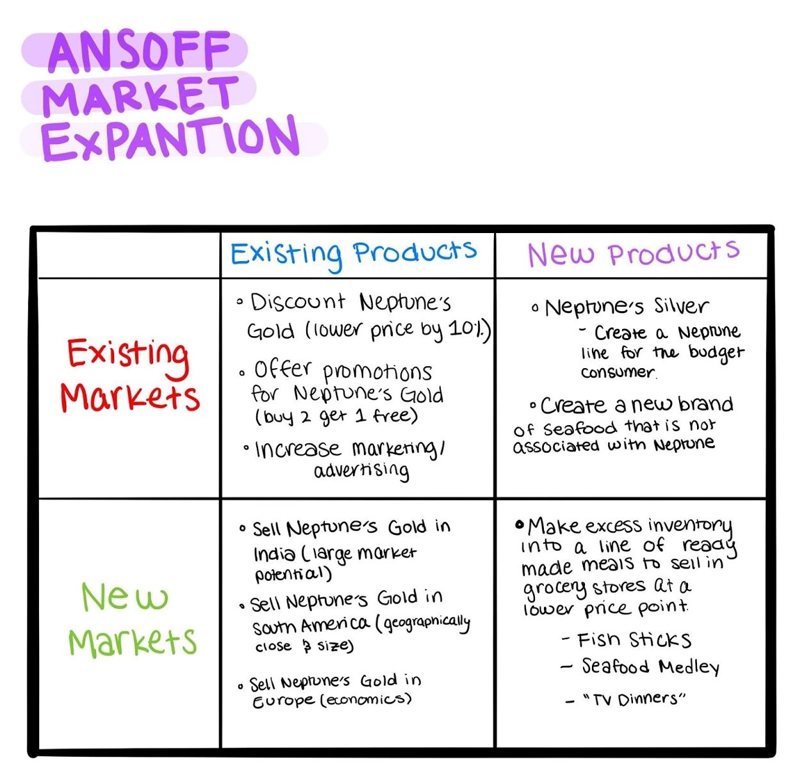
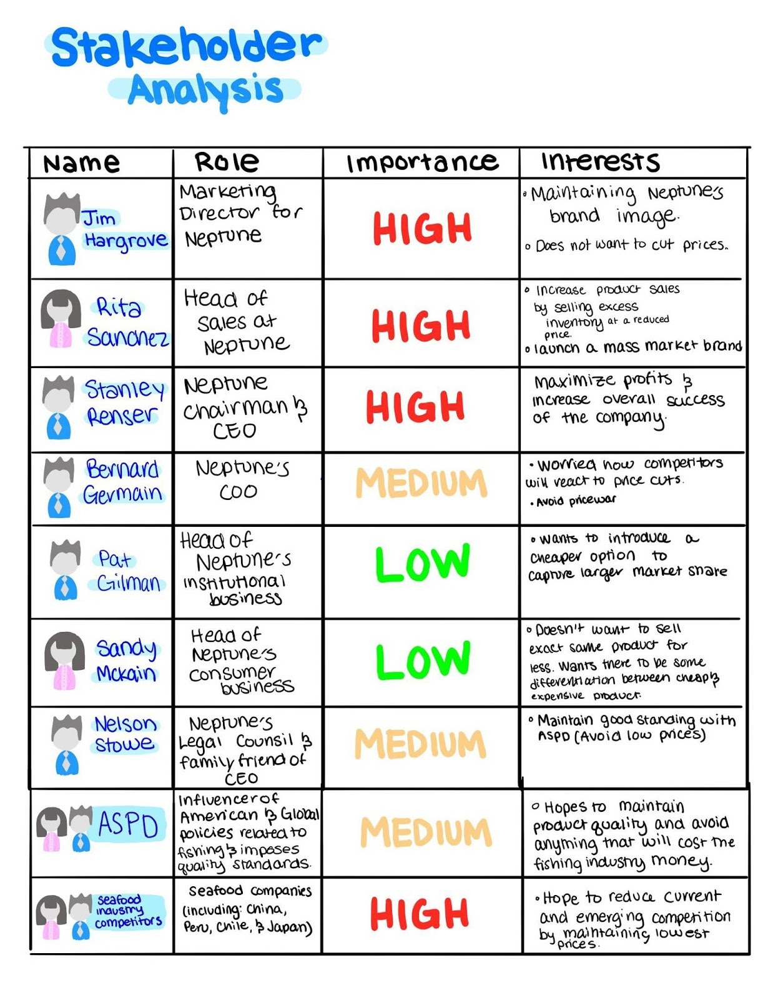

Madison Colvin
Class or Mass & Holding Fast
Case Studies

Overview
Throughout my business capstone course we were assigned multiple case studies to complete individually. In these case studies we were expected to apply frameworks taught in the class to the assigned cases. The following write up was my personal recommendation for the Harvard Business Review case study: Class or Mass.
Executive Summary
Neptune Gourmet Seafood, a $820 million seafood supply company, is dealing with an internal issue of a surplus inventory of finished goods with no current way to sell their excess supply. Over 60% of the company’s sales are to high-end grocery stores and restaurants, where the quality of their products positions them as a market leader. Neptune currently enjoys a 30% higher price point over their competition due to their reputation of producing quality products. The company recently invested in upgrading their technology and equipment, including $9 million in freezer trawlers that increased shelf life by 50% and added $54 million in ships to its fleet that could catch fish more efficiently than ever before, leading to a supply that is exceeding demand by 33% each month. If this issue is not resolved, the company will lose potential revenue and profit from the overstock of perishable goods.
My recommendation below demonstrates that it is best for Neptune to grow demand through expanding its current product line, Neptune’s Gold, into the European Market. Through this strategy, Neptune will be able deplete its spare inventory by entering a market with similar tastes and buying power as the U.S. with its already well-established and high quality brand.
Finally, in the future, Neptune should be more careful when investing in costly technology upgrades and not focus its efforts on maximizing supply, but aim to meet the market’s demand in the most efficient way.
External Analysis Summary
The PESTEL Analysis identifies that there are political pressures from the U.S. Association of Seafood Processors and Distributors (ASPD) to maintain Neptune’s Gold Seal of Approval on all of their products, offering a low cost alternative puts their perfect Gold status at risk. Additionally, the PESTEL Analysis identifies there are new legal issues such as strict fishing laws which force the company to fish further out at sea. Neptune has recently invested $54 million in new ships that reduce their environmental impact by only catching mature fish, but their investments have increased efficiency dramatically and overshot the market demand, leaving the company overstocked with perishable goods. The Stakeholder Analysis (Appendix B) demonstrates the conflicting interests by individuals involved with Neptune and by larger organizations, which will shape the evaluation of alternatives.
Internal Analysis Summary
The Resources and Capabilities/VRIO analysis points out that the company has difficult to replicate advantages, including advanced equipment and technology, ASPD Gold Seal of Approval on all products, and a renowned reputation for producing high quality products that sell for 30% more than the competition. The company’s advanced technology is costly and difficult to obtain, but as technology is constantly advancing it will be difficult for Neptune to maintain this advantage as it is not easily sustainable. Additionally, Neptune is the only company in the industry to have the Gold Seal of Approval on all of its products, but this advantage may not be sustainable as other firms increase quality or as Neptune introduces new products. The Activity Map shows that high quality, product availability, ASPD approval, and above average willingness to pay are part of the company's value proposition, which are based on the company’s advanced technology, reliable supply, established brand name, and history of being a trusted seller.
The Root Cause Analysis dives into the issues Neptune is currently facing, including the possibility of entering a price war with the competition by selling a mass market seafood brand, dropping sales by 40-50% and risk diluting the brand image, lowering product cost and risking ASPD approval, and new tech and regulations leading the company to catch more fish than they can sell. The issue of supply exceeding demand is the underlying root cause of the current issues Neptune is facing, indicating that the problem can be solved by determining the most efficient way to get rid of their stock and sell more goods.
SWOT analysis
Based on the analysis and frameworks showcased in the appendix and the summaries above, the following SWOT analysis represents the key issues presented in the case.
Evaluation criteria and definition
- Profitability/Sustainability: how does this affect the bottom line and its durability? How this will impact profits and ROI?
- Customers: How are they impacted? Customer base includes restaurants, wholesalers, grocery stores, and individuals.
- Employees: Who is harmed and who is benefited and impacted?
- Competitor Risk: ability for competitors to easily respond and the ability to mitigate them?
- Competitive Advantage: Does it leverage and build CA?
- Risk: Is there a high likelihood that this alternative will succeed in the market?
- Risk: Will this damage Neptune’s premium brand image?
- Will the government and law approve of this alternative?
Alternatives
The case presents multiple solutions to consider, but the differences in the company's stakeholder objectives is creating an inability to decide on a rational solution that will please all involved. The root causes outlined in the appendix are driving the differences between the parties. To resolve this issue we must look at what options are going to get rid of excess inventory and generate the largest amount of profit for Neptune without cannibalizing sales, damaging the brand image, or losing ASPD approval. Through analysis of the case and frameworks in the appendix, I have developed three alternate solutions that could be implemented by Neptune to solve their issue of supply exceeding product demand. Solutions proposed include:.
Donate excess supply to charities and food banks near Neptune’s manufacturing facilities. This idea could generate positive publicity for the company and would be a better use of the product than letting the products go bad in storage facilities. In turn, the media exposure could boost demand in the months to come and increase Neptune’s sales, depleting their excess supply. Furthermore, this solution could be used as a tax write off for the firm providing a financial incentive to donate their products rather than letting them go to waste. However, this option would not sell products, which in the short term would mean reduced sales and lower revenue for the firm.
2. Create a mass market brand to liquidate surplus products at a low price under a lower-end brand. To reduce the risk of diluting Neptune’s elite brand image, the firm should rebrand their products and not mention their current brand name “Neptune’s Gold'' or any deviation of Neptune, such as “Neptune’s Silver” as suggested in the case. In addition to the rebrand, the firm would have to target a new customer base so that their current target market doesn't switch to the cheaper brand and cannibalize their own sales. Neptune should target price sensitive customers at superstores such as Target and Walmart, the proposed brand would excel at these locations as the consumer base at superstores are interested in finding the lowest price possible opposed to high-quality products. On the other hand, Neptune will no longer be competing on quality and instead will be competing mainly on price, risking a price war with its competition.
3. Enter the European market and sell Neptune Gourmet Seafood’s current brand: Neptune’s Gold.. To ensure Neptune maintains its premium brand image, doesn’t cannibalize sales, and sells its excess supply, Neptune should expand overseas to a new market that is similar to its current high-end U.S. market. Europe is the perfect market to enter because of its large market potential and huge demand for seafood. In 2018, Europe was the second largest fish and seafood importer in the world with a value of $22.1 billion. With Neptune’s already well established reputation in the U.S. market, they are bound to quickly gain traction in the European market and sell their overstocked supply at normal rates, but Neptune should also be prepared to face new competition with high product quality in this market.
Alternatives Evaluation Matrix
Recommendations
Based on the Evaluations Matrix above, there are several strategic recommendations to solve Neptune Gourmet Seafood’s overstocking issue, but the solution to which Neptune would benefit most from would be to sell their current product, Neptune’s Gold, in the European market.
The EU is one of the largest markets for U.S. seafood exports, accounting for a total of 22% U.S. seafood exports in 2015. Additionally, the EU has an annual average per capita consumption of around 23.81 kg, which is approximately 7 kg greater than the world average, 17 kg per year. Neptune has positioned themselves as a high-end seafood brand with high quality products, this reputation will help carry them into this new market and allow them the ability to keep their high prices for their premium brand. In turn, this solution will resolve many issues among their stakeholders, allowing for them to keep their brand image, not risk their ASPD Gold Seal of Approval, and not have to cannibalize their current brand to sell products.
The Neptune team should consider first entering into European high-end grocery stores and restaurants like they have done previously in the U.S. market. In the future they consider the implications of technology and equipment upgrades before investing, so they can better plan for their supply to meet projected demand.
PESTEL Analysis
Resources and Capabilities/VRIO
Root Cause Analysis
Activities Map
Activities Map with Mass Market Brand
Activities Map with European Market
Ansoff Matrix/Market Expansion Grid
Porter's Five Forces

External Stakeholder Analysis

Overview
Throughout my business capstone course we were assigned multiple case studies to complete individually. In these case studies we were expected to apply frameworks taught in the class to the assigned cases. The following write up was my personal recommendation for the Harvard Business Review case study: Holding Fast.
Executive Summary
Crescordia, a market leader in medical fixation devices, has built a distinguished brand reputation in the medical industry and is well known across the world for supplying premier, high-quality medical products. Crescordia currently only offers steel and titanium fixation devices, while competitors in their market are beginning to explore and release new resorbable fixation devices. Resorbable fixation devices are engineered to dissolve in a patient's body over time, thus eliminating the removal procedure required with normal fixation devices and making the process less invasive while saving operation time. Before this technology was introduced to market, Crescordia had already developed a resorbable fixation device of their own, the product had been run through rigorous and thorough testing, but the product failed 8% of the time and was never introduced to market. Although Crescordia never entered the market with their product, a competitor, Innostat, decided to enter the medical market with a resorbable fixation device with an even higher product failure rate than Crescordia’s. Despite its high failure rate, the product did extremely well, proving to be extremely popular, especially for pediatric patients as the surgeries are ess invasive than typical fixation device procedures. The new technology has since changed market demand and has threatened Crescordia’s market share. Crescordia is now faced with the issue in which they must decide if, and how, to release their resorbable fixation devices without damaging their brand image.
My recommendation below demonstrates that the best course of action for Crescordia to grow their market share and increase profitability is to introduce a full set of implants, screws, plates, and devices needed for resorbable fixation devices to the market. Through this strategy, Crescordia will be able to regain lost customers and acquire new markets such as pediatric departments. Although their current product doesn’t have a 100% success rate, their product is better than the competition’s, positioning them as the clear choice in resorbable fixation devices.
External Analysis Summary
The PESTEL Analysis identifies that there are external legal pressures that Crescordia faces when deciding to launch a new medical product. Changing laws and regulations could influence the products Crescordia is allowed to manufacture and bring to market. Additionally, as Crescordia’s products are used for medical purposes, the company must consider legal repercussions and lawsuits from patients or hospitals from distributing a defective product. The Stakeholder Analysis demonstrates the conflicting interests of individuals and by larger organizations, which will shape the evaluation of Crescordia’s alternatives. To appease their external stakeholders while doing what is best for the company, Crescordia must consider the advice of its legal counsel Sam Maddox, to avoid legal repercussions. Additionally, the firm must do what is best for patients receiving their products, doctors and surgeons performing the procedures, the hospitals purchasing their product, and consider its current competition: Innostat.
Internal Analysis Summary
The Resources and Capabilities/VRIO analysis indicates Crescordia has difficult to replicate advantages, including advanced technology, prestigious reputation for producing high quality products, and they currently manufacture the most successful resorbable fixation products known in the market. Crescordia’s advanced technology is difficult and costly to maintain, but in the medical industry it is essential for technology to constantly advance, making it a difficult advantage for the company to sustain. In addition, Crescordia has manufactured the most successful fixation device in the market, with a success rate of 92%, but this advantage is not sustainable as other companies in the industry begin researching resorbable fixation devices and increase resorbable technology effectiveness. The Activity Map shows that high product quality, industry connections, and established brand reputation are part of the company's value proposition, which are based on the company’s advanced technology, history in the market, and only introducing products with a high success rate to market.
The Root Cause Analysis examines the issues Crescordia is currently facing, including losing customers to the competition, complete fixation on quality, and the difficulty of testing resorbable products in a lab environment. The issue of Crescordia not offering a resorbable product on the market is the underlying root cause of the issues the company is facing, indicating that most of their current issues can be solved by launching their resorbable technology.
SWOT analysis
Based on the analysis and frameworks showcased in the appendix and the summaries above, the following SWOT analysis represents the key issues presented in the case.

Evaluation criteria and definition
- Profitability/Sustainability: how does this affect the bottom line and its durability?
- Customers: How are they impacted?
- Employees: Who is harmed and who is benefited and impacted?
- Competitor Risk: ability for competitors to easily respond and the ability to mitigate them?
- Competitive Advantage: Does it leverage and build CA?
- Risk: How will this damage Crescordia’s high-quality brand reputation?
- Legality: Does this option risk legal repercussions?
Alternatives
The case presents multiple solutions for Crescordia to consider, but the differences in the company's internal and external stakeholder objectives is causing a divide that is preventing the company from coming to a reasonable solution that will please all parties. The Root Cause Analysis identifies the issues Crescordia is currently facing, in order to resolve these issues we must examine what options will increase market share, gain back lost customers, and what solution will be most effective without damaging their current brand image. Through reviewing the case and frameworks referenced in the appendix, I have constructed three viable solutions that could be implemented by Crescordia to boost their customer base, regain lost customers, and maintain their high-quality brand image.
1. Manufacture and bring resorbable fixation devices to market. To regain their lost customer base and capture a larger market Crescordia should consider going all in with the production of resorbable fixation devices, including manufacturing a full set of implants, plates, screws, and the hand and power tools needed to surgically implement these devices. The only other competitor on the market for resorbable fixation devices is Innostat and Crescordia has already proven through product tests that their resorbable technology is more effective than the competition. This advantage and their established brand reputation will give the company a competitive edge in the market. On the other hand, the company still has a 8% product failure rate and could face legal repercussions and a hit to their brand reputation from selling a defective product. In order to maintain their brand image and avoid potential lawsuits, the company needs to be transparent with the patients, doctors and hospitals about their product success rates and run additional tests before entering the market.
2. Continue to develop and research steel and titanium fixation devices. Crescordia has established itself as a high quality fixation device supplier. Instead of changing their product line, they should consider sticking to what they do best to protect their brand image and continue to produce only steel and titanium fixation devices. In contrast, not advancing with the industry could hurt their market share and could lose loyal buyers. Hospitals may switch to a supplier that offers a variety of fixation device technology as it is easier to source all of their supplies from one distributor. By not keeping up with medical and technology trends, the company could be labeled as being “dated” and “old-school”, all of which are poor qualities to be associated with medical devices, thus, they also risk damaging their brand’s reputation by doing nothing.
3. Enter the pediatric market with resorbable fixation devices. Resorbable technology is extremely popular with pediatric units as procedures are less invasive and operations will only have to be performed once versus twice with steel and titanium fixation devices. Due to this, the pediatric market accounts for the largest source of demand for product technology. By introducing a resorbable fixation device to the pediatric market, Crescordia could capture a new market and regain their lost customers. Based on the success of the introduction Crescordia could make the decision to expand and enter other markets with their resorbable technology. Although this solution could be good for business, this decision could create a multitude of serious issues for the company if the resorbable products are substandard. Using children as the test subjects of the resorbable fixation devices could lead to lawsuits for the company, a tarnished brand reputation, and the unethical sales to children if the product is unsuccessful could lower employee morale.
Alternatives Evaluation Matrix

Recommendations
Based on the Evaluations Matrix above, there are several strategic recommendations that could be implemented to solve Crescordia’s current issues, but the solution to which Crescordia and its stakeholders would benefit most from would be to manufacture and bring resorbable fixation devices to market.
Crescordia has already demonstrated success in its ability to capture the market and poise itself as a market leader in the fixation device industry. The company already possesses the status needed to enter the market with new technology, once buyers compare their product stats with what is already on the market and see a well respected brand name attached to the product, customers won't hesitate to switch from Innostat’s inferior product to Crescordia’s. Although their technology is not yet perfected, it is much better than what is currently on the market, offering those who seek a resorbable fixation device a safer and more reliable option than the competition can. When introducing these products to the market and to avoid any legal turmoil, Crescordia must be completely transparent with their customer’s and patient’s about the product’s success rates.
With legal approval, Crescordia should also implement resorbable fixation device tests on willing adult patients before going to the mass market with their product. By doing this, the company can see how the product interacts with the human body, instead of only performing tests on cadavers in the lab, and make adjustments accordingly. Although this testing phase could add additional time to their entrance to market, this strategy is vital when it comes to minimizing the legal risks of this product, retaining the brands elite reputation, and putting the customer’s health as the number one priority.
PESTEL Analysis

Resources and Capabilities/VRIO

Root Cause Analysis

Activities Map

Ansoff Matrix/Market Expansion Grid

Porter's Five Forces
Internal Stakeholder Analysis

External Stakeholder Analysis